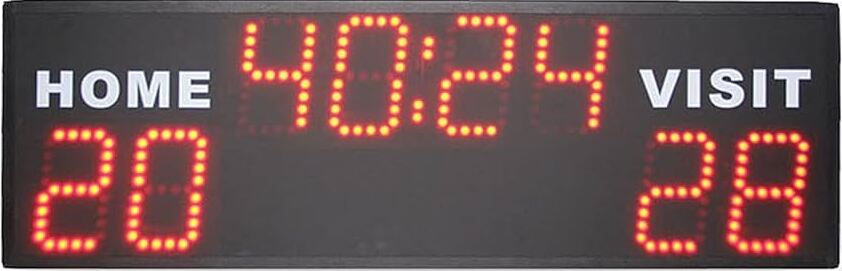
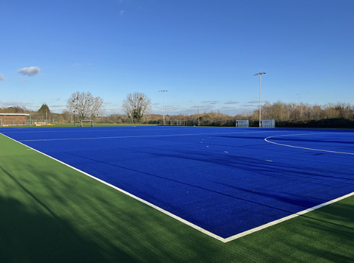
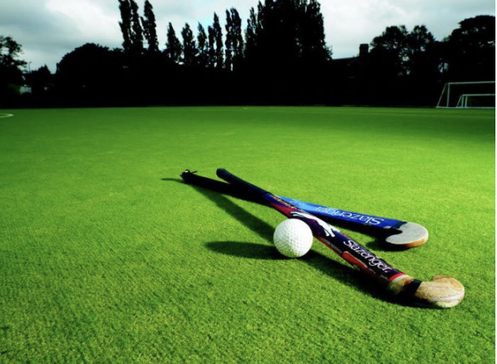
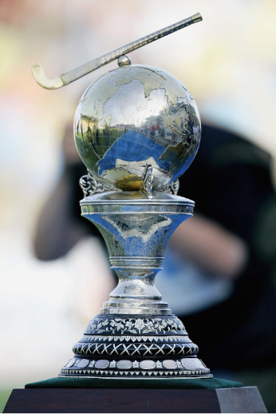

Equipos: Se juega entre dos equipos de 11 jugadores, incluyendo un arquero.
Los jugadores son distribuidos en diferentes posiciones:
Puntuación:
Se anota un gol cuando la pelota cruza la línea de gol y entra en el arco del equipo contrario.
Cada gol vale un punto, y el equipo que más goles tenga al final del tiempo de juego, gana el partido.
Área de juego:
La cancha es de césped natural o sintético, y tiene un tamaño de aproximadamente 91.4 metros de largo y 55 metros de ancho.
Reglas básicas:
Los jugadores no pueden usar el cuerpo para controlar la bocha, lo único que controla la bocha es el palo. El juego solo se detiene si la bocha sale de los límites de la cancha. Las faltas pueden resultar en tiros libres, penales, o tarjetas (verde, amarilla, roja) para sancionar a los jugadores. El juego consta de dos tiempos de 35 minutos cada uno y un descanso de 10 minutos entre ellos. El juego comienza en el centro del campo. Los jugadores utilizan sus palos para avanzar la bocha hacia la portería del equipo contrario, intentando marcar goles.
Equipamiento:
Los jugadores usan un palo de hockey de madera o fibra de vidrio para golpear una bocha de plástico dura y pequeña.
Torneos:
El torneo más importante es la Hockey World Cup, que se celebra cada cuatro años y reúne a las mejores selecciones nacionales del mundo. También se llevan a cabo competencias regionales como la Hockey Pro League y los Juegos Panamericanos, donde equipos de diferentes países compiten. Además, los clubes profesionales participan en ligas nacionales y competiciones continentales, como la Euro Hockey League en Europa.
Tipos de pases:
Además de los pases, el dribbling es muy importante en el hockey. Consiste en mover la bocha mientras se avanza, usando el palo para controlar y evitar a los defensores.
Historia:
El hockey sobre césped comenzó en Inglaterra en el siglo XIX y se hizo popular rápidamente. En 1908, fue parte de los Juegos Olímpicos por primera vez en Londres. Desde entonces, el deporte se ha difundido por todo el mundo, especialmente en países como India, Pakistán y Argentina, donde es muy popular.